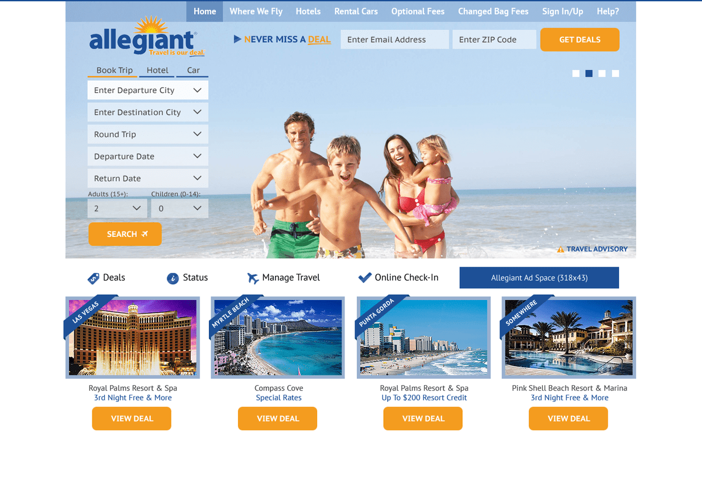

Allegiant Air
https://www.allegiantair.comMost of my working life has been spent on the Allegiant Air project.
Based in Las Vegas, Allegiant Air are the ninth-largest commercial airline in the US.
I've gone from working for them as a Drupal CMS engineer to building UI's with a JavaScript based MVC framework (JMVC) to finally using a modern JavaScript stack which includes ES6, Webpack, GraphQL and React.
A design opportunity came when a new front page was needed. This is the version which got adopted:

Reusable Component Architecture
My passion lies in building scalable components which allow for high composition but still work in isolation. For Allegiant, I maintain a component library, which we refer to as Boneyard — it provides the building blocks for all of our applications.
Components include; buttons, form fields, layout, carousels and collapsible regions.
Built in React, each component comes with a well considered prop API and is supported by a configurable theme which allows for heavy customisation.